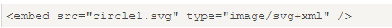
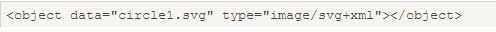
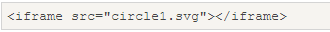
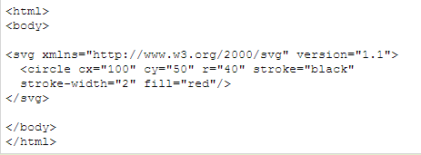
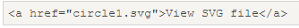

什么是SVG----可缩放矢量图形,使用XML格式定义图像:SVG参考手册
1.SVG指可伸缩矢量图形（Scalable Vector Graphics）
2.SVG 用于定义用于网络的基于矢量的图形
3.SVG 使用 XML 格式定义图形
4.SVG 图像在放大或改变尺寸的情况下其图形质量不会有损失
5.SVG 是万维网联盟的标准
6.使用 XML 来描述二维图形和绘图程序的语言
SVG优势：与其他图像格式相比（比如 JPEG 和 GIF），使用 SVG 的优势在于
1.SVG 图像可通过文本编辑器来创建和修改
2.VG 图像可被搜索、索引、脚本化或压缩
3.SVG 是可伸缩的
4.SVG 图像可在任何的分辨率下被高质量地打印
5.SVG 可在图像质量不下降的情况下被放大
把SVG直接签入HTML页面,更多内容请访问SVG教程
SVG与Canvas的区别
1.SVG 是一种使用 XML 描述 2D 图形的语言
2.Canvas 通过 JavaScript 来绘制 2D 图形
3.SSVG 基于 XML，这意味着 SVG DOM 中的每个元素都是可用的。您可以为某个元素附加 JavaScript 事件处理器
4.在 SVG 中，每个被绘制的图形均被视为对象。如果 SVG 对象的属性发生变化，那么浏览器能够自动重现图形
5.Canvas 是逐像素进行渲染的。在 canvas 中，一旦图形被绘制完成，它就不会继续得到浏览器的关注。如果其位置发生变化，那么整个场景也需要重新绘制，包括任何或许已被图形覆盖的对象
| Canvas |
SVG |
| 依赖分辨率 |
不依赖分辨率 |
| 不支持事件处理器 |
支持事件处理器 |
| 弱的文本渲染能力 |
最适合带有大型渲染区域的应用程序（比如谷歌地图） |
| 能够以 .png 或 .jpg 格式保存结果图像 |
复杂度高会减慢渲染速度（任何过度使用 DOM 的应用都不快） |
| 最适合图像密集型的游戏，其中的许多对象会被频繁重绘 |
不适合游戏应用 |
SVG在HTML中的使用
SVG嵌入到HTML中的方式：
embed、object、iframe、直接嵌入到HTML页面中、直接链接到SVG文件
使用emded标签：优点-所有主要浏览器都支持，并允许使用脚本；缺点-不推荐在HTML4和XHTML中使用（但在HTML5允许）
语法：

使用object标签：优点-所有主要浏览器都支持，并支持HTML4，XHTML和HTML5标准；缺点-不允许使用脚本
语法：

使用iframe标签：优点-所有主要浏览器都支持，并允许使用脚本；缺点-不推荐在HTML4和XHTML中使用（但在HTML5允许）
语法：

直接在HTML中嵌入SVG代码：在Firefox、Internet Explorer9、谷歌Chrome和Safari中，你可以直接在HTML嵌入SVG代码(SVG不能直接嵌入到Opera)
语法：

链接到SVG文件：可以用a标签链接到一个SVG文件
语法：

SVG 矩形（rect）
width="矩形的宽度"。必需的。
height="矩形的高度"。必需的。
x属性定义矩形的左侧位置（例如，x="0" 定义矩形到浏览器窗口左侧的距离是 0px）
y 属性定义矩形的顶端位置（例如，y="0" 定义矩形到浏览器窗口顶端的距离是 0px）
rx="x轴的半径（round元素）:设置圆角"
ry="y轴的半径（round元素）:设置圆角"
fill 属性设置形状内的颜色.
stroke 和 stroke-width 属性控制如何显示形状的轮廓及轮廓的宽度.
fill-opacity 属性定义填充颜色透明度（合法的范围是：0 - 1）.
stroke-opacity 属性定义笔触颜色的透明度（合法的范围是：0 - 1）
创建圆角矩形
SVG 画（circle）
cx="圆的x轴坐标，必需."
cy="圆的y轴坐标，必需.",
r="圆的半径",必需.
fill 属性设置形状内的颜色.
stroke 和 stroke-width 属性控制如何显示形状的轮廓及轮廓的宽度.
SVG 椭圆（ellipse）
CX属性定义的椭圆中心的x坐标
CY属性定义的椭圆中心的y坐标
RX属性定义的水平半径
RY属性定义的垂直半径
fill 属性设置形状内的颜色.
stroke 和 stroke-width 属性控制如何显示形状的轮廓及轮廓的宽度.
创建了三个累叠而上的椭圆
组合了两个椭圆（一个黄的和一个白的）
SVG 直线（line）：line元素是用来创建一个直线
x1 属性在 x 轴定义线条的开始
y1 属性在 y 轴定义线条的开始
x2 属性在 x 轴定义线条的结束
y2 属性在 y 轴定义线条的结束
fill 属性设置形状内的颜色.
stroke 和 stroke-width 属性控制如何显示形状的轮廓及轮廓的宽度.
SVG 多边形（polygon）：polygon标签用来创建含有不少于三个边的图形
points 属性定义多边形每个角的 x 和 y 坐标(逆时针坐标)
points="多边形的点。点的总数必须是偶数"。必需的。 fill 属性设置形状内的颜色.
stroke 和 stroke-width 属性控制如何显示形状的轮廓及轮廓的宽度.
三角形
四边形
星形：fill-rule: nonzero
星形：fill-rule: evenodd
SVG 曲线（polyline）：polygon标签义只有直线组成的任意形状
points 属性points=折线上的"点"。必需的
fill 属性设置形状内的颜色.
stroke 和 stroke-width 属性控制如何显示形状的轮廓及轮廓的宽度.
SVG 路径（path）：path定义一个路径
d="定义路径指令"
pathLength="如果存在，路径将进行缩放，以便计算各点相当于此值的路径长度"
transform="转换列表"
fill 属性设置形状内的颜色.
stroke 和 stroke-width 属性控制如何显示形状的轮廓及轮廓的宽度.
下面的命令可用于路径数据：
M=moveto
L=lineto
H = horizontal lineto
V = vertical lineto
C = curveto
S = smooth curveto
Q = quadratic Bézier curve
T = smooth quadratic Bézier curveto
A = elliptical Arc
Z = closepath
SVG 文本（text）：text定义一个文本
x="列表的X -轴的位置。在文本中在第n个字符的位置在第n个x轴。如果后面存在额外的字符，耗尽他们最后一个字符之后放置的位置。 0是默认"
y="列表的Y轴位置。（参考x）0是默认"
dx="在字符的长度列表中移动相对最后绘制标志符号的绝对位置。（参考x）"
dy="在字符的长度列表中移动相对最后绘制标志符号的绝对位置。（参考x）"
rotate="一个旋转的列表。第n个旋转是第n个字符。附加字符没有给出最后的旋转值"
textLength="SVG查看器将尝试显示文本之间的间距/或字形调整的文本目标长度。（默认：正常文本的长度）"
lengthAdjust="告诉查看器，如果指定长度就尝试进行调整用以呈现文本。这两个值是'spacing'和'spacingAndGlyphs'"
rotate参数设置
更多文本设置
SVG Stroke属性：所有stroke属性，可应用于任何种类的线条，文字和元素就像一个圆的轮廓
Stroke属性定义一条线，文本或元素轮廓颜色
stroke-width属性定义了一条线，文本或元素轮廓厚度
stroke-linecap属性定义不同类型的开放路径的终结
stroke-dasharray 属性用于创建虚线
stroke-linecap属性
SVG 滤镜：用来增加对SVG图形的特殊效果